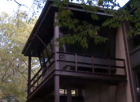
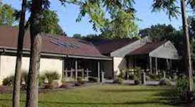

(Family: Parents & children under the age of 18 or grandparents & grandchildren under the age of 18)
Brukner Nature Center has 6 miles of nature trails that allow you to search for wildlife on quiet mulch trails through wooldland, wetland, and prairie.
Trails are open from sunrise to sunset only!
No pets allowed - they scare our wildlife!
No smoking or vaping on BNC property!
Please stay on the trails, especially through the muddy parts! Off-trail exploration causes erosion, damages wildflowers, & depletes habitat by widening trails.
Brukner Nature Center is a premier birding spot for spring migration, winter feeder watching (Project Feeder Watch) and enjoying birds at any time of the year! The Tree-Top
Bird Vista is an air-conditioned oasis during the summer months and a warm and inviting place to spend the winter hours! The pileated woodpecker visits our feeders on a
regular basis year round!
Check out our calendar of events for upcoming birding programs! Meet members of the Brukner Bird club on the 3rd Sunday of every month from 2:00 - 4:00pm in our Tree-Top Bird Vista.

Art Exhibits & Kid's Nature Art Exhibit
Each season brings a new wildlife art exhibit to Brukner Nature Center's Heidelberg Auditorium and Meeting Room! Come enjoy our current art exhibit and mark your calendars for the
opening of our new exhibit!
Nature Library
All visitors can enjoy the field guides, nature writings, DVDs and more! A special section of the Nature Library is devoted to kids' nature picture books, so stop by and gather your
family for your own nature story time!
Nature Gift Shop
Check out our unique items in our nature shop at your next visit! We have field guides, children books, t-shirts, waterbottles, turtle necklaces, owl pellets, bird calls, a variety
of bird houses, our own "Brukner Blend" coffee, and so much more!

A History of the 1804 Iddings Log House
Iddings Log House
An integral part of Brukner Nature Center’s interpretive programming, the 1804 Iddings Log House also holds an important place in the history of Miami County. The Iddings family is
originally descended from the Norsemen and came to America from Radnorshire, Wales in 1683. Richard Iddings and his wife, Sarah Thomas, arrived in Philadelphia, Pennsylvania and
settled in Nantmeal Township, Pennsylvania, between the forks of the Brandywine River and French Creek, very near a little place called Valley Forge. Richard and Sarah Iddings were
the grandparents of two famous figures in Ohio history, General “Mad” Anthony Wayne and Benjamin Iddings.
Benjamin Iddings married Phebe Wilkinson in 1775, in Pennsylvania. Their children, listed in the Quaker Monthly Meeting records were Rachel, Ruth, Talbot, Joseph, Mary, Benjamin Jr.,
Phoebe, William, Millie and Hannah. The Iddings were a prominent and very active family in the Quaker community. They began their life on the road in 1779, moving frequently to escape
the fighting in the area. They settled in Greene County, Tennessee in 1795. Here they helped found the New Hope Monthly Meeting, were Benjamin was appointed recorder in 1796 and was
an Elder.
Following the Treaty of Greeneville in 1795, the Ohio territory was opened for settlement. Benjamin, perhaps because of his famous cousin’s experience in the area, made an exploratory
trip up the Stillwater River into what is now Newton Township. He moved his family to Miami County, acquiring a patent on 160 acres on SE 1/4 Sec. 33-7-5E. Here, in 1804, Benjamin
constructed the log house on what is now Brukner Nature Center property. Benjamin and Phoebe lived here with six of their ten children, as Rachel had passed away and Ruth, Talbot &
Joseph were married and on their own.
Interestingly, Benjamin built his house on the property of his neighbor, Benjamin Pearson and later paid him the sum of $63.11 ½ for an additional four acres upon which his house was built.
Although this sounds strange for modern times, it was not unusual for property lines to be mistaken in the wilderness of 1800 Ohio. Phoebe died in 1818 and in 1822, Benjamin married his
widowed neighbor, Ruth Pierce. Benjamin died in 1826, and both he and Ruth are buried in Old Union Cemetery, on Horseshoe Bend Road.
Through extensive research, the underlying historical value of the structure itself was realized, not only for its handsome construction but for the significant family history. In 1976,
the 1804 Iddings Log House was placed on the National Register of Historic Places and a successful restoration was completed in 1981. Through its doors have passed many visitors stepping
back in time, from Iddings relatives looking for a link to the past to children too numerous to count making memories to last a lifetime.